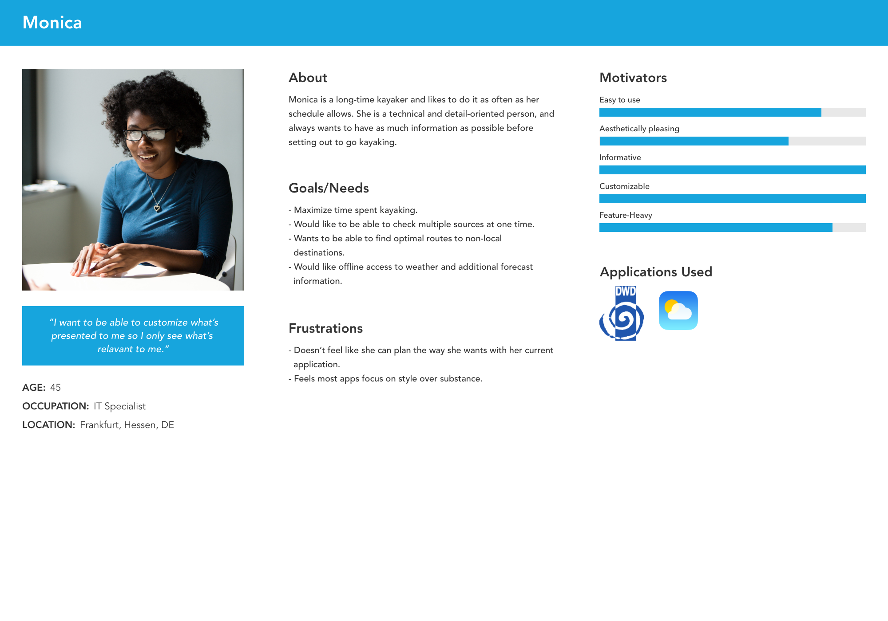
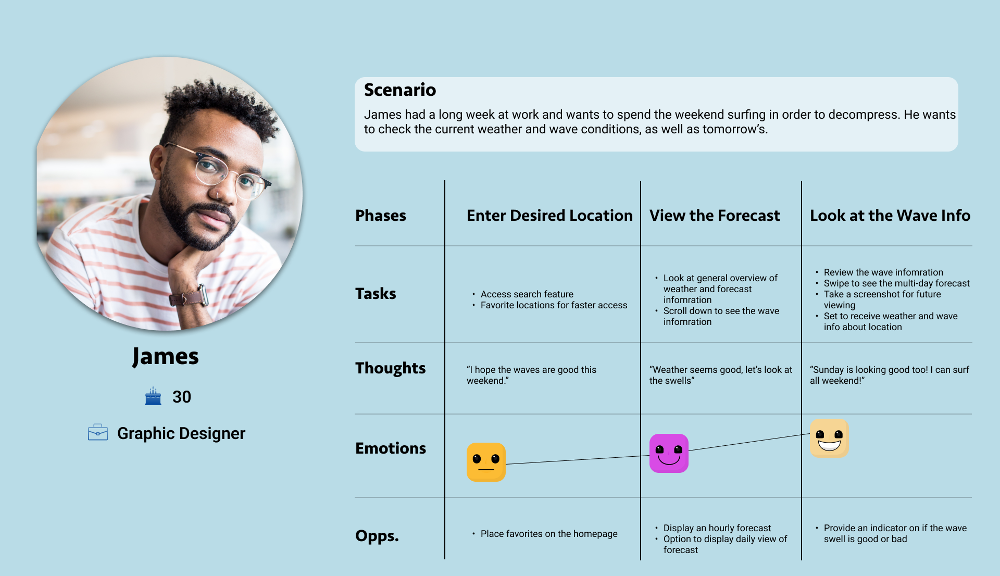
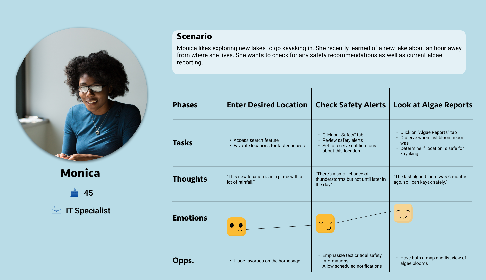
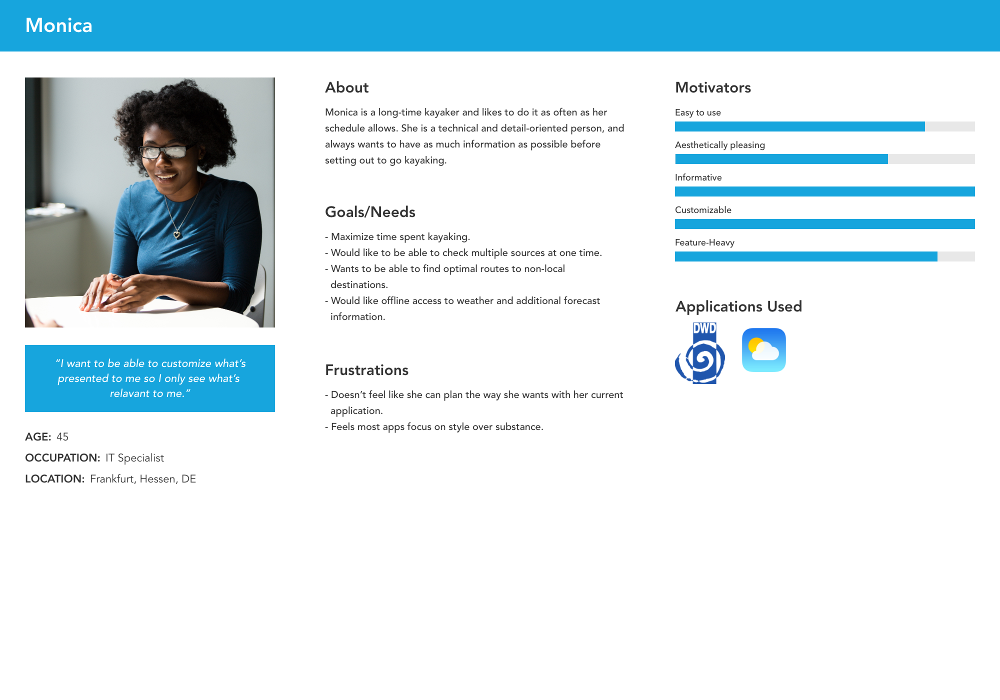
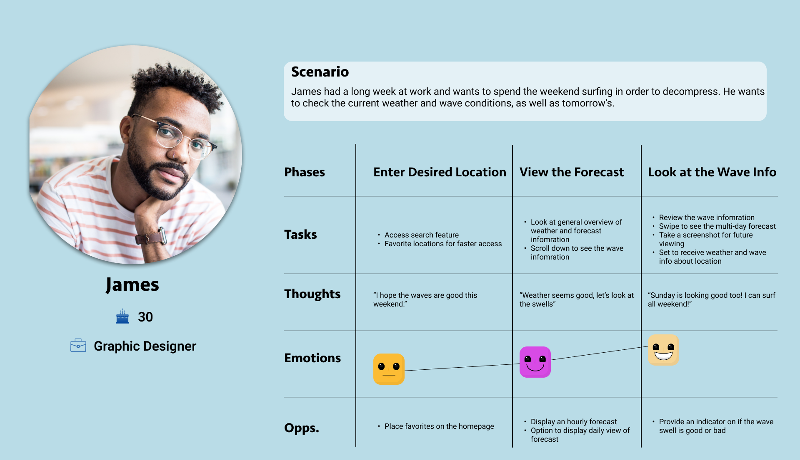
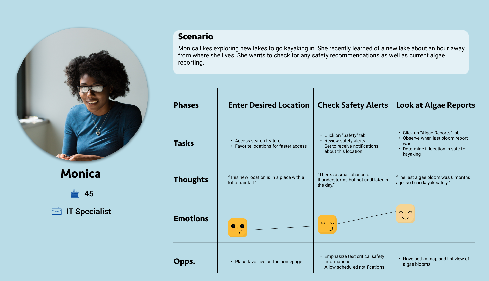

Voda is a responsive web application designed to provide people
who do water sports with
an easy-to-understand and informative weather-checking
system.
Defining the Problem
To safely and efficiently enjoy your time on the water, it is best to check weather conditions beyond the temperature and precipitation chances. You want to know wave strength, wind speed, and algae content. Existing weather applications are not meeting the goal of making complex weather data accessible and easy to understand. Often you have to pay for more detailed weather reports, or the language is too technical for the average person to comprehend.
Voda simplifies complex weather data so that you can check all the necessary information. All in 3 minutes or less.
The Process
As a former figure skater from the Midwest, I knew next to nothing about what kind of information was important to water sportspeople. So, I began by researching what types of applications already existed for this demographic and learned about their strengths, weakness, and where the opportunities were for my application to fill a need.
Opportunities
- Provide activity recommendations based on weather conditions to take the guesswork away from the user.
- Track algae blooms in water sources to keep people out of dangerous bodies of water that can make them sick.
- Offer safety suggestions so the user can know how to proceed beforehand.
- Simplify and streamline the information provided and its presentation in a way that is not overwhelming to the user.
- Allow the user to customize what they see to give them control over their experience and only see what matters to them.
Other features I wanted to include:
- A blog or newsletter to share water sport tips, resources, and trends.
- A social chat for sportspeople to connect, share advice and stories, and plan local meetups.
I also noted that the navigation menus need to be condensed. There were several applications with expansive menus and submenus, which can lead to confusion about where to go for information. After completing my analysis of the current market and competitors, I began to plan for interviewing and surveying my target market; adults who participate in water sports.
Survey Goals
- What water sports are most popular/common; to know what weather information to emphasize.
- What is the median age range of water sportspeople; to tailor the design and functions around that.
- Determine the level of expertise; so that the language and jargon are appropriate.
Results
From these results, I determined my goal was to provide a weather application focused on information such as wave height, wind speed, wind direction, and algae content. It should also have a bright and friendly color scheme so that the user feels engaged when using it.
Based on an overwhelming response that participants did not read blogs or newsletters specific to their sports or belong to any sport-specific groups, I scrapped my ideas for a blog, newsletter, or social chat.
Interview Goals
- Learn people's habits before and during their sport/activity; so that I can know how best to present information to them.
- Learn what features would be most helpful to them.
- Learn the most used applications to see if there's a common theme about what users are finding the most helpful.
My most notable finding from conducting interviews is that there is no satisfactory, all-in-one weather application. Several participants used 2-3 different applications to accomplish their weather-checking. Voda had an opportunity to fill a need and give users an app where they can quickly and easily check the information they need in one place.
 





Designing For The User
After doing a final review of my research, the goals of my design would be to:
- Streamline the presentation of information, so that users are able to easily navigate the application.
- Provide comprehensive information, so that users do not have to leave my application to fill in knowledge gaps.
- Give users control over what information the they see, so that the user can own their experience.


Early Problems and Usability Testing
Early iterations of Voda included:
- One information card per screen on mobile to give equal attention to all the information and avoid one set of information getting overlooked simply because it was last on the screen.
- A pop-up window for the safety information; so that users would focus on the message instead of scrolling past it.
- A brief text overview of the weather so that if they didn't want to view all the visual information, they had a snapshot.
During usability testing, this view was not favorable. Participants found the overview text redundant and would have preferred that the safety information was in its place instead. This layout was also inefficient once I added the 10-day and monthly views. So I was challenged to find another way to provide the necessary information without cluttering the screen and overwhelming the user. I looked through other existing applications and concepts to research different layout structures in order to improve my design.
Tasks
- Search for a location.
- Check either daily, 10-day, or monthly weather.
- View the radar.
For moderated tests, I timed how long it took to complete three of the main tasks because the goal is for users to check the weather in three minutes or less. The total average time for task completion was 43 seconds, so I concluded that the design and user flow met this goal.
Final Product
After completing the final iteration, I conducted a usability test for feedback. Participants liked the weather icons, the overall look of the application, and the information provided, most notably the algae reporting. Participants also commented on how easy the app was to navigate; there were no mentions of people being confused or frustrated by the flow. I completed a minor update in January to combine the wind speed and direction sections. I also added a water temperature section because the research participants mentioned swimming the most.

Lessons Learned
This project taught me the full scope of the design process. When I chose to do a weather application, I assumed I know what I wanted it to look like and what users wanted. However, after completing the competior analysis, I knew I had to rethink everything. It seems obvious now, but weather is a complex science. Translating that science so that it is useful to the everyman, took a lot of work. I also learned why you should never rely on assumptions. For example, before research, I thought most would say surfing is there primary water sport. Although people did mention surfinng, swimming and kayaking were to top two responses. This completely changed the initial direction of my project. Learning this early in the process saved me from a lot of wasted time and extra work.